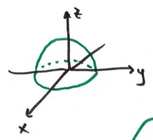

Flux and the Divergence Theorem
Let \(\mathbf{F} = 4x\mathbf{i} - z\mathbf{j} + x\mathbf{k}\). Compute Flux \[ \iint_S \mathbf{F} \cdot d\mathbf{S} \] where \(S\) is the union of the hemisphere \(x^2 + y^2 + z^2 = 1, z \ge 0\), and the base given by \(x^2 + y^2 \le 1, z = 0\). (Use the outward-pointing normal.)
Surface closed: can use Divergence Theorem
IF \(\vec{F}\) is defined everywhere inside the enclosed volume

Options:
- A. \(\frac{2\pi}{3}\)
- B. \(\frac{16\pi}{3}\)
- C. \(\frac{8\pi}{3}\)
- D. \(\frac{4\pi}{3}\)
- E. \(\frac{-4\pi}{3}\)
Div. Theorem:
\[ \iint_S \vec{F} \cdot d\vec{S} = \iiint_E \text{div } \vec{F} \, dV \]
\(\text{div } \vec{F} = \nabla \cdot \langle 4x, -z, x \rangle = 4 + 0 + 0 = 4\)
\[ \iiint_E 4 \, dV = 4 \iiint_E dV = 4 \cdot \frac{1}{2} \cdot \frac{4}{3}\pi(1)^3 = \frac{16}{6}\pi = \frac{8\pi}{3} \]
volume of hemisphere
note if \(\text{div } \vec{F} = 1\) then \(\iint_S \vec{F} \cdot d\vec{S} = \text{volume}\) (Flux)